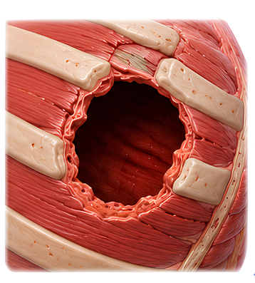
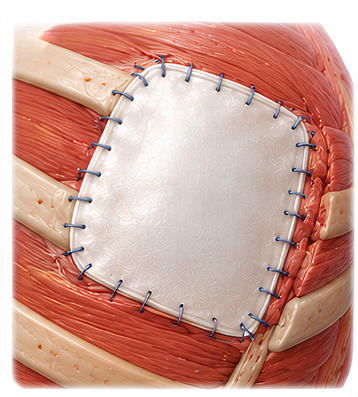
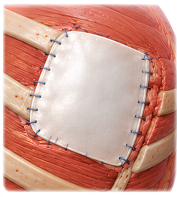
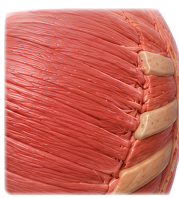

Surgicoll-Mesh®
Cardio-Vascular
Implantable, bioresorbable, tissue regenerative sterile Type-I Collagen matrix. Designed for reconstructive surgery, chronic wounds, diabetic ulcers, burns and soft tissue repair.

Cardio-Vascular
Implantable, bioresorbable, tissue regenerative sterile Type-I Collagen matrix. Designed for reconstructive surgery, chronic wounds, diabetic ulcers, burns and soft tissue repair.

Surgicoll-Mesh® is a purified Type-I collagen matrix designed to provide a biocompatible and adaptable scaffold for potential use in cardiovascular and cardiothoracic surgical repair and reconstruction. Its flexible collagen architecture allows the matrix to conform to complex anatomical surfaces while providing structural support at the surgical site.
Potential applications of Surgicoll-Mesh® include cardiac patches for atrial and ventricular repair, intracardiac patches, arterial and vascular patches, reinforcement of surgical suture lines as a buttress, and thoracic wall repair and reconstruction.

Surgicoll-Mesh® supports a range of cardiovascular and thoracic surgical procedures — from intracardiac repair to suture-line reinforcement.
Atrial and ventricular repair and reconstruction. It may also help promote cardiac function through myocardium regeneration for the treatment of myocardial infarction caused by ischemia.
Repair and reconstruction of intracardiac defects.

Patch applications in vascular and arterial repair. In case of septal defects, Surgicoll-Mesh as a patch (secondary repair) would eventually facilitate the growth of the heart tissue around and over the patch, getting incorporated into the muscle.

A cut is made across the narrowed section of the aorta. A Surgicoll-Mesh patch is then sewn in place to widen the blood vessel. This procedure is particularly useful when the coarctation involves a long segment of the aorta.

Patch angioplasty involves the use of a patch graft to close an arteriotomy following procedures such as femoral and carotid endarterectomy. Surgicoll-Mesh is highly pliable, allowing for easy handling and precise suturing during vascular reconstruction.


Reinforcement and support of surgical suture lines.

Support for thoracic wall repair and reconstruction following trauma, surgery, etc.




Surgicoll-Mesh supports the regeneration and repair of tissue following tumor excision. It may be used in the reconstruction of cardiac structures after the removal of tumors such as right atrial leiomyosarcoma, right atrial metastasis of malignant melanoma, and large left atrial myxoma. Surgicoll-Mesh has been successfully used for tissue repair & reconstruction following the excision of various other tumors.